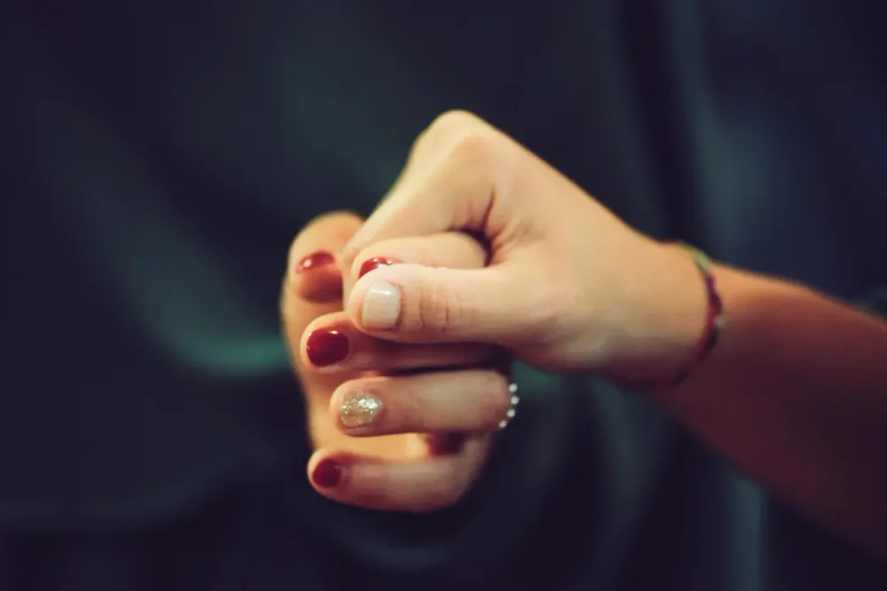

Ainhoa Etxeberria
Trauma y apego · IFS · EMDR
Psicóloga general sanitaria (UAM, máster en la UAX). Formada en neuropsicología, EMDR, IFS y AEDP.
Muestra de diseño creada por OI Studio: el nombre, las personas y los datos son inventados.
Terapias

Te acompañamos en el trauma, el apego,
la ansiedad, la pareja y la familia
Quizá tus emociones no están intentando destruirte, sino contarte algo que llevas demasiado tiempo sosteniendo.
Sesiones de 50 minutos, a tu ritmo
Para empezar
No hace falta tenerlo todo claro. Elige lo que más se parezca a lo que vives y te contamos cómo podemos acompañarte.
Terapia individual
Un lugar donde poder parar, entender lo que te está pasando y empezar a ordenarlo sin sentirte juzgado/a.
Pedir primera consultaEl equipo
Psicólogas sanitarias con formación en trauma, apego, EMDR, IFS y terapia familiar y de pareja. La terapia se adapta a ti, no al revés.
Trauma y apego · IFS · EMDR
Psicóloga general sanitaria (UAM, máster en la UAX). Formada en neuropsicología, EMDR, IFS y AEDP.
Familia y pareja
Psicóloga general sanitaria (UAX), especializada en terapia familiar y de pareja. Acompaña también a menores.
Trauma, apego · EMDR · IFS
Formada en la UCM, máster sanitario (UAX) y en psicología jurídica y forense (CEU).
Ansiedad · niños y adolescentes
Psicóloga clínica. Atiende a niños, adolescentes y adultos, en castellano y en inglés.
Las sesiones
La tarifa incluye la preparación de cada sesión, el seguimiento de tu proceso y el contacto entre sesiones.